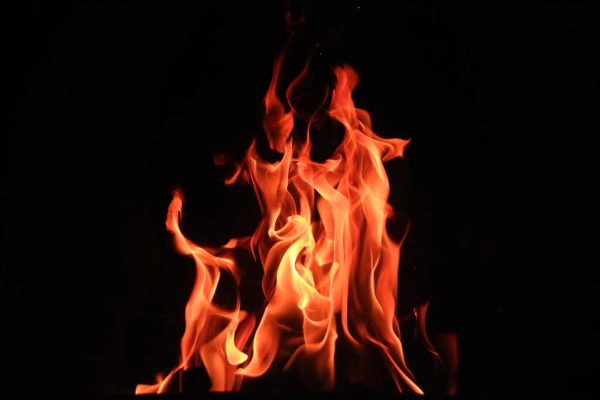
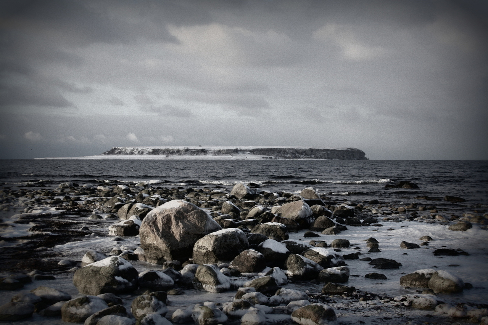
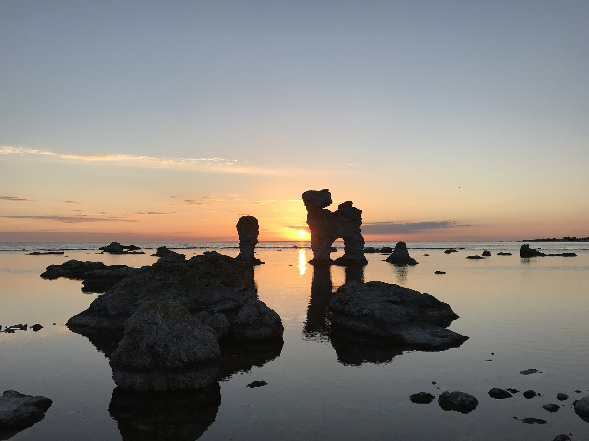

The Legend of Gotland
Gotland, an enchanting island located in the Baltic Sea, is known for its rich history, medieval architecture, and picturesque landscapes.
"Legends told that Gotland was once an enchanted creature that rose from the sea every evening and sank in the morning."

Once upon a time, Gotland was a magical living creature. Like every other powerful creature from fairy tales, it did not like to be disturbed.
At night, it was just like a normal island: simple, peaceful, and quiet.
But once the dawn came, it would fiercely destroy everything around, and finally, sink underwater, taking all unlucky visitors down into the depth of the sea.
Some said this island was enchanted under the spells of witches.
Many, many years had passed with the repeated loop. The island remained uninhabited until one day, Tjelvar made a risky journey to Gotland with just a small rowing boat, knowing the island would sink in the morning. In the middle of the night, he started a fire.

Magnificently, the fire had created a force that broke the enchantment, cleansed all the evils, and Gotland was pacified. This mythical creature was tamed. Therefore, it remained above the sea level from this time on.
Tjelvar then became the king of Gotland and was loved by his people. He was known in history to be the first person to ever live on Sweden’s largest island.
The story ends, as he lived happily ever after and died in his old age.
Exclusive of the story!
Although the story is just a legend, it actually has some historical facts that could give you some thrills.

#1: Gotland island sinking by day and rising by night
Geologically, the sea was once much higher than it is now and there is evidence that the fluctuation of the sea level had affected the appearance of the island. Gotland’s land is relatively flat, so when the sea level was near the top of the cliffs, it might have created the vision that the island disappeared in the water, but then it reappeared after some time.
The latest rise of the island was estimated around 9000 BC, before the final stay of Gotland above sea level.
Romantic souls would find the sinking of the island mysterious, so it’s not a surprise at all that this has been compressed into legendary stories of the island.
#2: Using Fire as the Spell Breaker
You might have already known from childhood stories, that any guilt of witchcraft could be punished by the death of being burned in the fire. So the fire was believed to be the cure of all evils from the root. The motif of using fire to hallow the spell or bring it to the land could placate bewitched land spirits, which were also found widely in European literature.
Hmmm… Or could it have another meaning?
It could be… The legend implied that the island could only be inhabited once it was dry enough to sustain the fire. And yes, by that means, when the sea level was low enough. This happened when the “creature” was tamed and life could officially begin.

Gotland has always been so beautiful, peaceful, and… stable since the “enchantment was broken”. So don’t worry, you are safe to go! xD
Beaches, countryside, and city life - all compacted in one - Gotland has the harmony of history and modern life. I hope the story will give you a different view about this island, to see how worth it is to visit.